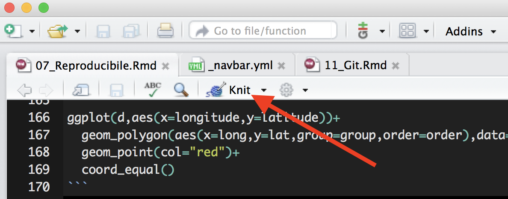
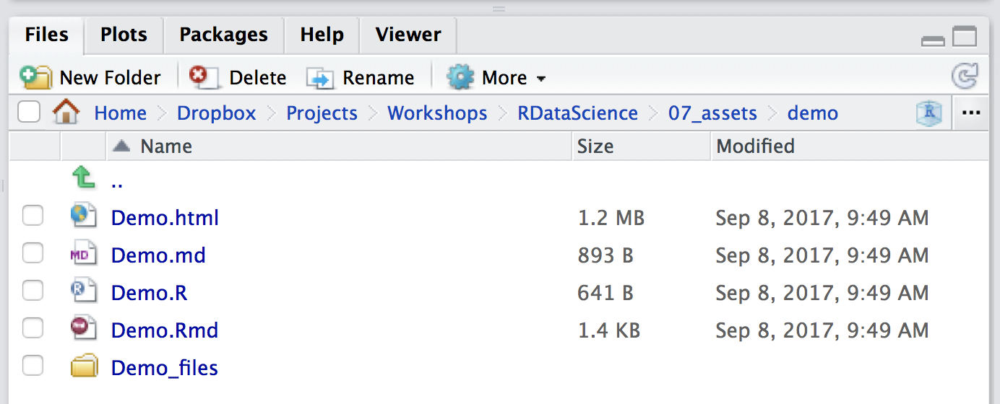

Reproducible and Interactive Research
Cory Merow & Adam Wilson
9/19/2017
1 Getting started
You may need to install some software for this sequence of 3 tutorials.
- RStudio (convienient way to interact with R) :
https://www.rstudio.com/products/rstudio/download/#download - git (version control):
https://git-scm.com/downloads - Create a GitHub account (sharing code online) at
https://github.com/ - R packages (for these demos):
install.packages(c('knitr','shiny','dplyr','ggplot2','maps','spocc',''wallace','rmarkdown'), dep=T) - pandoc (to convert among document formats like html, pdf, docx):
http://pandoc.org/installing.html
2 Overview
- Research Reports with R markdown
- Version control with Github
- Interactive presentations
- Developing Web Applications with Shiny
- Developing R websites (like this)
The same set of tools is used for all these!
2.1 Benefits are straightforward
- Verification & Reliability: Find and fix bugs.
- Transparency: Increased citation count, broader impact, institutional memory
- Efficiency: Reduces duplication of effort, Colleagues like you and ask for advice
- Flexibility: When you don’t ‘point-and-click’ you gain many new analytic options.
2.2 But limitations are substantial
- Classified/sensitive/big data
- Nondisclosure agreements & intellectual property
- Competition
- Few expect reproducibility
- No uniform standards
- Inertia & embarassment
2.3 A spectrum of reproducibility

Peng 2011, Science 334(6060) pp. 1226-1227
2.4 Code > Click trails
- Clicks = Lots of human effort for tedious & time-wasting tasks
- Clicks = Error-prone due to manual & ad hoc data handling
- Clicks = Difficult to record - hard to reconstruct a ‘click history’
- Code = Improved transparency, automation, maintanability, accessibility, standardisation, modularity, portability, efficiency, communicability of process (what more could we want?)
- Code = Plain text files readable for a long time
3 Reproducible Research in R
- Programming language:
- The machine-readable part: R
- Document formatting language
- Markdown: lightweight document formatting syntax. Easy to write, read and publish as-is.
- Human-readable part
rmarkdown: minor extensions to allow R code display and execution, embed images in html files, equations
knitr: Dynamic documents in R {.columns-2}
- Narrative and code in the same file or explicitly linked
- When data or narrative are updated, the document is automatically updated
4 Demo
4.1 R Markdown Cheatsheet

https://www.rstudio.com/wp-content/uploads/2015/02/rmarkdown-cheatsheet.pdf
The reference guide is a little more comprehensive
4.2 Create new file
In Rstudio: File -> New File -> RMarkdown -> Document -> HTML

This will open a document that looks like this:

4.3 Step 1: Load packages
All R code to be run must be in a code chunk like this:
#```{r,eval=F}
CODE HERE
#```Add a new code chunk at the bottom of this template file to load these packages (you may need to install some packages):
library(dplyr)
library(ggplot2)
library(maps)
library(spocc)Do you think you should put
install.packages()calls in your script?
4.4 Step 2: Load data
Now use the occ() function in new code chunk to download all the occurrence records for the American robin (Turdus migratorius) from the Global Biodiversity Information Facility.

Licensed under CC BY-SA 3.0 via Wikimedia Commons
{kind=link}
## define which species to query
sp='Turdus migratorius'
## run the query and convert to data.frame()
d = occ(query=sp, from='ebird',limit = 100) %>% occ2df()4.5 Step 3: Map it
# Load coastline
map=map_data("world")
ggplot(d,aes(x=longitude,y=latitude))+
geom_polygon(aes(x=long,y=lat,group=group,order=order),data=map)+
geom_point(col="red")+
coord_equal()## Warning: Ignoring unknown aesthetics: order
4.6 Step 4: YAML header
Update the YAML header to keep the markdown file from this:
title: "Untitled"
author: "Adam M. Wilson"
date: "October 31, 2016"
output: html_documentTo this (you need to save the markdown (md) document to make the html):
title: "Demo"
author: "Adam M. Wilson"
date: "October 31, 2016"
output:
html_document:
keep_md: trueAnd click knit HTML to generate the output

Changing this YAML header is all that’s needed to change among document types. Try experimenting. (pdf won’t work unless you have latex installed.)

4.7 Files
kniting produces a number of files all extracted from the Rmd you wrote, seen below

- .Rmd - you wrote this
- .md - plain markdown, with the R code already run
- .R - just the R code chunks, useful for rerunning just the code
- .html - the output file for others to view
- /YourDocumentName_files - any files generated from running the R code
In case you had trouble generating this document, the R Script associated with this page is available here.
4.8 Step 5: Explore markdown functions
- Use the Cheatsheet to add sections and some example narrative.
- Add more figures or different versions of a figure
- Check out the
kable()function for tables (e.g.kable(head(d))) - Some example of slightly more complex Rmd files:
- the vignette from the R package bossMaps.
- The R markdown gallery with examples of interactive documents, websites, books, and presentations, that we’ll demonstrate in the next tutorials
4.9 Step 6: Tips
- Caching will speed up compiling
#```{r,eval=F}
knitr::opts_chunk$set(cache=TRUE)
#```- Hide the code, just show the results
#```{r, echo=FALSE}- Don’t evaluate the code (maybe its slow or broken)
#```{r, eval=FALSE}5 More Background
5.1 Key References
- Rmarkdown homepage
- html document format options for the YAML header
- using code chunks
5.2 Pandoc: document converter
How does markdown magically convert between document types (html, pdf, docx)?
A universal document converter, open source, cross-platform
- Write code and narrative in rmarkdown
- knitr->markdown (with computation)
- use pandoc to get HTML/PDF/DOCX
- its also very easy and useful from the command line: https://pandoc.org/demos.html
 http://kieranhealy.org/blog/archives/2014/01/23/plain-text/
http://kieranhealy.org/blog/archives/2014/01/23/plain-text/
5.3 Colophon
- Slides based on Ben Marwick’s presentation to the UW Center for Statistics and Social Sciences (12 March 2014) (OrcID)
5.4 References
See Rmd file for full references and sources